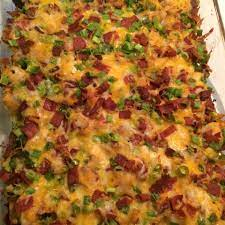

Combining Buffalo Chicken with Loaded Baked Potatos
This dish is perfect for anyone who is looking for a quick way to feed a great dish to many people. From prep time to the table takes only 1 hour and 20 minutes, and with the ability to feed 10 people, this dish is a must have for gameday. What makes this dish so unique is that it takes commonly paired food items and combines them into one dish. This casserole is great, as it perfectly maintains the taste of both the buffalo chicken and the loaded potatos. Not only this, but it also finds a way to use these two popular dishes to complement each other.
Ingredients
- cooking spray
- 6 tablespoons hot pepper sauce
- 1/3rd cup olive oil
- 2 tablespoons garlic powder
- 1 tablespoon freshly ground black pepper
- 1 tablespoon paprika
- 1.5 teaspoons salt
- 8 potatoes, cut into 1/2-inch cubes
- 2 pounds skinless, boneless chicken breast halves, cut into 1/2 inch cubes
- 2 cups shredded Mexican cheese blend
- 1 cup crumbled cooked bacon
- 1 cup diced green onions
Steps
- Preheat oven to 500 degrees F (260 degrees C). Spray a 9x13-inch baking dish with cooking spray.
- Heat hot pepper sauce, olive oil, garlic powder, black pepper, paprika, and salt in a large skillet over low heat, stirring until thoroughly combined. Turn off heat. Toss potatoes in batches with the hot pepper sauce mixture to coat and use a slotted spoon to transfer potatoes to the prepared baking dish. Leave remaining sauce in skillet. Mix chicken into remaining sauce and allow to marinate while potatoes roast.
- Bake potatoes until tender inside and crisp and brown outside, 45 to 50 minutes, stirring every 10 to 15 minutes.
- Reduce oven heat to 400 degrees F (205 degrees C).
- Spread chicken cubes over roasted potatoes. Sprinkle Mexican cheese blend, cooked bacon, and green onions over chicken. Return to oven and bake until chicken is cooked through and the cheese topping is bubbling, about 15 minutes.
- Bake in oven until chicken is cooked through and the cheese topping is bubbling, about 15 minutes

The perfectly textured cookies
This dish is exactly how it seems. What makes this dish so great as it does not try to reinvent the wheel as other cookie recipes do, but rather seeks to give the viewer the insight into how to make the perfect batch of cookies. With only an hours worth of working, 24 servings of cookies (or 48 cookies) can be made.
Ingredients
- 1 cup butter, softened
- 1 cup white sugar
- 1 cup packed brown sugar
- 2 eggs
- 2 teaspoons vanilla extract
- 1 teaspoon baking soda
- 2 teaspoons hot water
- 1/2 tablespoon salt
- 3 cups all-purpose flour
- 2 cups semisweet chocolate chips
- 1 cup chopped walnuts
Steps
- Preheat oven to 350 degrees F (175 degrees C)
- Cream together the butter, white sugar, and brown sugar until smooth. Beat in the eggs one at a time, then stir in the vanilla. Dissolve baking soda in hot water. Add to batter along with salt. Stir in flour, chocolate chips, and nuts. Drop by large spoonfuls onto ungreased pans.
- Bake for about 10 minutes in the preheated oven, or until edges are nicely browned

Home Sweet Home Mac and Cheese
This cheese-dense mac and cheese is perfect for any gameday. With just a total prep time of 50 minutes, and making 4 servings, this quick dish will be sure to leave everyone satisfied. Taking the standard macaroni and cheese and adding a breadcrumb topping as well as a paprika sprinkle on top leaves the dish with a wider array of flavors.
Ingredients
- 8 ounces uncooked elbow macaroni
- 1/4 cup butter
- 2.5 tablespoons all-purpose flour
- 3 cups milk
- 2 cups shredded sharp Cheddar cheese
- 1/2 cup grated Parmesan cheese
- 2 tablespoons butter
- 1/2 cup bread crumbs
- 1 pinch paprika
Steps
- Preheat the oven to 350 degrees F (175 degrees C)
- Cook macaroni according to the package directions, drain
- Melt butter in a medium skillet over low heat. Gradually add flour, whisking until well combined. Slowly pour in milk, whisking constantly until smooth. Stir in cheeses, and cook over low heat until cheese is melted and the sauce is a little thick. Put macaroni in large casserole dish, and pour sauce over macaroni. Stir well.
- Melt butter in a skillet over medium heat. Add breadcrumbs and brown. Spread over the macaroni and cheese cover. Sprinkle with a little paprika
- Bake in the preheated oven for 30 minutes. Serve